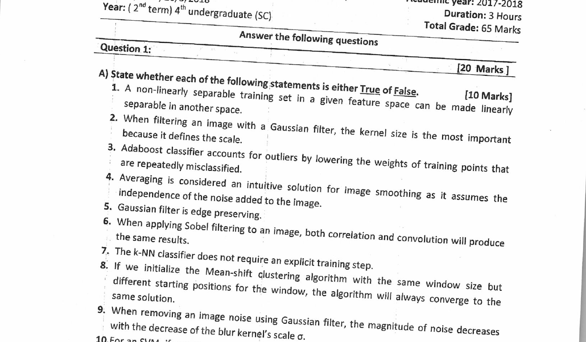

Q1·A — Ten True/False statements [10 Marks]
Question (as printed)

Solution
For T/F items, the trick is usually one small clause that's deliberately wrong. Read the sentence twice; if any one piece (a word like "always", a wrong direction of effect, or a swapped concept) is off, the whole thing is False.
| # | Statement (paraphrased) | T/F | Why |
|---|---|---|---|
| 1 | A non-linearly separable set can be made linearly separable in another (higher-dim) feature space. | True | Exactly the kernel-trick / lifting idea behind SVMs. |
| 2 | When Gaussian filtering, kernel size is the most important because it defines the scale. | False | It's σ that defines the scale. Kernel size just has to be large enough (≈6σ) to fit the bell. |
| 3 | Adaboost handles outliers by lowering the weight of repeatedly-misclassified points. | False | Adaboost increases the weight of misclassified points — outliers actually become problematic for Adaboost. |
| 4 | Averaging smooths images by assuming noise is independent. | True | Averaging cancels zero-mean independent noise; that's the whole intuition. |
| 5 | Gaussian filter is edge-preserving. | False | It blurs everything including edges. Bilateral / median are edge-preserving. |
| 6 | For Sobel, correlation and convolution give the same result. | False | Sobel is not symmetric (it's anti-symmetric), so flipping the kernel changes the sign. |
| 7 | k-NN has no explicit training step. | True | It's a lazy learner — training is just storing the data. |
| 8 | Mean-shift with the same window size but different starts always converges to the same solution. | False | Different starting points climb to different local modes. |
| 9 | For Gaussian denoising, the noise magnitude decreases as σ decreases. | False | The opposite — bigger σ = more blur = more noise suppression. |
| 10 | Removing a support vector makes the SVM margin increase. | False | Support vectors define the margin; removing one normally widens the candidate margin in one direction, but the new margin from re-solving usually shrinks overall because a constraint that was pinning it is gone. Standard taught answer: False — the margin generally decreases (or stays the same). |
Adaboost and Mean-shift aren't covered in the current syllabus; they appeared in the 2018 lectures.